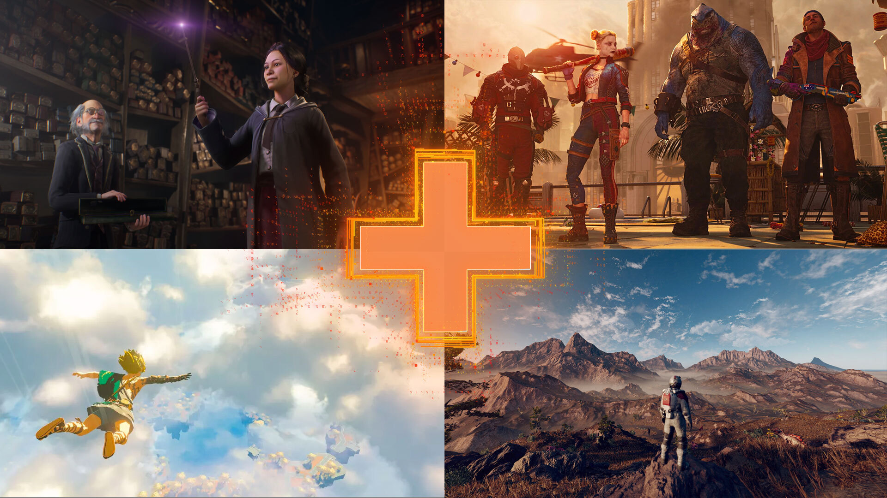

Cameron's Website!
CSci-1020

The current Gaming scene
The gaming industry is currently experiencing a period of rapid growth and innovation. There
are a wide variety of gaming titles and consoles available on the market, each offering unique features
and experiences for players.
One of the most popular gaming consoles currently available is the PlayStation 5 (PS5), which was
released by Sony in November 2020. The PS5 boasts a number of advanced features, such as a built-in
solid-state drive (SSD) that greatly improves load times and in-game performance, as well as support for
ray tracing technology that enhances the realism and detail of in-game graphics. Additionally, the PS5 also
features an improved DualSense controller, which offers haptic feedback and adaptive triggers that enhance
the immersion of the gaming experience. The PS5 also has a great library of games such as Marvel's Spider-Man:
Miles Morales, Demon's Souls and Ratchet & Clank: Rift Apart.
Another popular gaming console currently available is the Xbox Series X and Series S, which was released
by Microsoft in November 2020. The Series X is the more powerful of the two, featuring a 12 teraflop GPU
and 16GB of GDDR6 memory, while the Series S is a more budget-friendly option with a lower price point and
less powerful hardware. Both consoles feature a built-in SSD for improved load times and performance, as
well as support for ray tracing technology. The Xbox Series X and Series S also have a great library of
games such as Halo Infinite, Fable and Forza Horizon 5.
For those who prefer to game on a PC, there are a wide variety of high-performance gaming laptops and desktops
currently available. These devices offer powerful hardware and features that can handle the latest and most
demanding games, such as the Alienware Aurora R11, the Razer Blade Pro 17 and the ASUS ROG Zephyrus S GX701.
In terms of gaming titles, there is a wide variety available across all platforms. On the PS5, Xbox
Series X and Series S, and PC, players can enjoy the latest and most popular titles, such as Cyberpunk
2077, Call of Duty: Black Ops Cold War and Assassin's Creed Valhalla. Additionally, there are also a
number of popular online multiplayer titles, such as Fortnite and Overwatch, which continue to attract a large
player base.
Overall, the gaming industry is currently experiencing a period of rapid growth and innovation, with a wide
variety of gaming titles and consoles available on the market. Whether you prefer console gaming, PC gaming,
or both, there are plenty of options available to suit your preferences and budget.

Starfield
Starfield is an upcoming action role-playing video game developed by Bethesda Game Studios and published by
Bethesda Softworks. The game is set in a new science fiction universe and is being developed as a single-player
experience. Starfield is set to be released for Xbox Series X/S, PlayStation 5 and PC.
Starfield is being developed by the same team behind the critically acclaimed game series The Elder Scrolls
and Fallout, so expectations are high for the new game. The game is set in a new, original universe and is
said to feature a vast open world for players to explore. The game will feature both hand-crafted and procedurally
generated content, and players will be able to fly spaceships and visit various planets.
Although there are not many details available about the game yet, Bethesda has released some information
about the game's setting and gameplay. The game will take place in a vast open-world environment and players
will be able to explore a variety of different planets, each with their unique environments, creatures and cultures.
The game will also feature a wide range of weapons and abilities, allowing players to customize their playstyle.
The game will feature a deep and engaging story, with players taking on the role of a character who is the last
hope for their civilization. The game will also feature a character progression system, allowing players to level
up and gain new abilities as they progress through the game.
Starfield is one of the most highly-anticipated games of recent years, and the excitement for its release is
only growing. Bethesda has yet to announce an official release date for the game, but it's expected to release
in 2022, possibly in the end of the year. Fans of the studio's previous work and sci-fi fans in general are
eagerly awaiting the release of Starfield, and it's certain that the game will be a major hit when it finally comes out.
What I game on
The PlayStation 4, commonly known as the PS4, is a home video game console developed and marketed by
Sony Computer Entertainment. It was first released on November 15, 2013, and has since become one of the
most popular gaming consoles in the world.
One of the key features of the PS4 is its powerful hardware, which includes a custom AMD APU (Accelerated
Processing Unit) with 8-cores, 8GB of GDDR5 RAM, and a powerful GPU (Graphics Processing Unit) that can
handle even the most demanding games with ease. This allows for smooth and seamless gameplay, as well as
stunning visuals and detailed environments.
The PS4 also has a strong focus on social connectivity, with features such as the ability to share gameplay
footage and stream live gameplay through popular platforms like Twitch and YouTube. Additionally, players can
join parties and play games with friends online, and even take part in cross-platform play with players
on other consoles.
The PS4 also offers a wide variety of games, from first-party titles like God of War and The Last of Us Part
II, to third-party games like Red Dead Redemption 2 and Call of Duty: Warzone. The console also has a robust
selection of indie games, as well as a growing library of games available through the PlayStation Now streaming service.
In addition to gaming, the PS4 also offers a variety of entertainment options, including access to streaming services
like Netflix, Hulu, and Amazon Prime Video, as well as the ability to play Blu-ray and DVD movies.
Overall, the PS4 is a powerful and versatile gaming console that offers a wide variety of gaming
and entertainment options. With its powerful hardware, social connectivity features, and diverse library of
games, it's no wonder that the PS4 has become one of the most popular gaming consoles in the world.